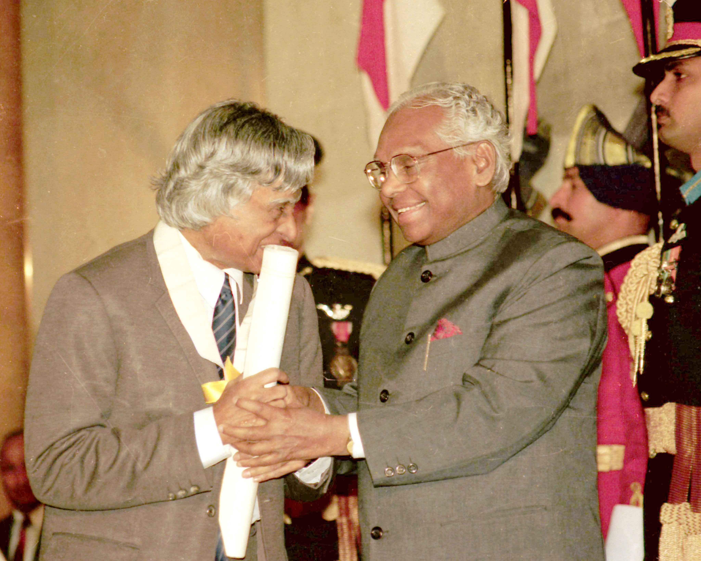

Kalam received Bharat Ratna before Presidency

Former President of India, APJ Abdul Kalam was awarded India's highest civilian honour, the Bharat Ratna in 1997, almost five years before he became the President on July 25, 2002. Popularly called the 'Missile Man of India', Kalam was given the award for his contribution to scientific research and modernisation of the Indian defense programme